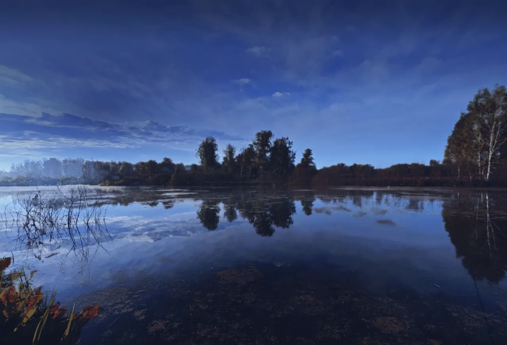

День
5:00–19:00с 5:00 до 19:00
2 кг карпа можно забрать с собойВключает 2 кг карпа, независимо от времени приезда
- С рыбака
- 800 ₽
- Сектор с закрытой беседкой
- 1000 ₽

Центр рыболовстваРыболовный клуб · Мошковский район
Рыбаки, ждём вас на «Трофейном»!
Приезжайте на рыбалку — на день или на сутки. На берегу есть отдельные рыболовные секторы, беседки и места для отдыха. Можно приехать одному, с друзьями или семьёй.
Мошковский район, Новосибирская область
Ведите курсором: в стеклянной капле рыба. Клик по ней ведёт дальшеПодержите палец на воде: появится линза с рыбами. Тап по ней ведёт дальше
Листайте, чтобы узнать больше«Пруд трофейный» стоит в Мошковском районе Новосибирской области. Это центр рыболовства: у нас платная рыбалка и кемпинг, оборудование и беседки можно арендовать. Работаем круглосуточно, так что приезжайте в любой час. Гости оценили нас на 4.7 в 2ГИС: 68 оценок и 52 отзыва.
Платная рыбалка, кемпинг, аренда оборудования и беседок
Всё начиналось с ручейка
Наш «Трофейный» начинался с небольшого ручейка. Постепенно мы готовили территорию, обустраивали места для рыбалки и отдыха.
Сейчас к нам приезжают на дневную и суточную рыбалку. Можно ловить на поплавочную удочку, фидер или карповые снасти. Для отдыха есть беседки, а при желании можно остаться на берегу подольше.
Сколько стоит рыбалка
Выберите подходящий тариф и приезжайте на рыбалку
Можно приехать на несколько часов или остаться на сутки. Выбирайте подходящий тариф.
5:00–19:00с 5:00 до 19:00
2 кг карпа можно забрать с собойВключает 2 кг карпа, независимо от времени приезда
14:00–14:00с 14:00 до 14:00
3 кг карпа можно забрать с собойВключает 3 кг карпа, независимо от времени приезда
Не рыбак на территории клуба, без права занимать отдельный секторНе рыбачит на территории клуба и не занимает отдельный сектор
300 ₽
Цены из прайса в группе ВКонтакте.
Цены уточняйте по телефону, в группе ВКонтакте или в чате Max
Позвонить и уточнитьПосмотрите, как у нас
Туман над водой на рассвете, палатка на берегу, вечер с удилищами и карп в подсачеке. Приезжайте в любой сезон: мы работаем круглосуточно.Утренний туман над водой, палатки на берегу, вечерние закаты и рыбацкие уловы.
Фото: 2ГИС
Приезжайте на «Трофейный»
Мы в Мошковском районе Новосибирской области, работаем круглосуточно.Наш пруд находится в Мошковском районе Новосибирской области.
Построить маршрутОт центра Новосибирска около 74 км, в пути около 1,5 часа на машине
Состояние дороги зависит от погоды. При необходимости уточните это заранее.
По отзывам гостей: дорога нормальная, слегка скользкая, но проедет любая машина.
Пруд отмечен на карте
Открыть карточку в 2ГИС